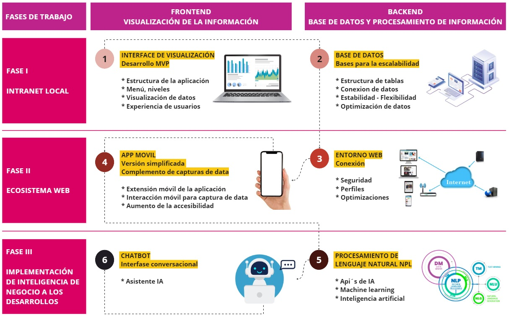

Desarrollo de aplicaciones con tecnologi base - Python
¿Por qué Python? El desarrollo de aplicaciones utilizando la tecnología Python ofrece la oportunidad de crear sistemas robustos, estables y escalables, con un inmenso potencial para la inteligencia de negocio (BI) al admitir la integración de procesamiento de lenguaje natural, aprendizaje automático y aprendizaje profundo en el desarrollo de aplicaciones.
Como ejemplo, las aplicaciones creadas con esta tecnología pueden incorporar secciones de procesamiento de lenguaje natural con una interfaz de chatbot que tenga acceso a todos los datos disponibles en la aplicación para responder preguntas específicas, como:
"¿Cuál fue el porcentaje de morosidad de la oficina central al cierre del año 2023?"
